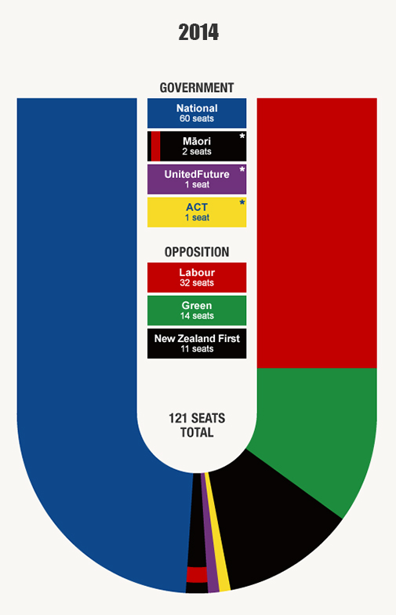

Mixed Member Proportional (MMP) Voting System
The Mixed Member Proportional (MMP) system is a hybrid method of electoral representation. It combines elements of both the First Past the Post (FPTP) and proportional representation systems. In MMP, each voter has two votes: one to decide the representative for their single-seat constituency, and another for a political party. This ensures that the total number of seats held by each party is proportional to the number of votes received. As a result, MMP addresses the discrepancy between the percentage of votes received and the number of seats won by parties, a common criticism of the FPTP system.
2014 New Zealand Parliament:
